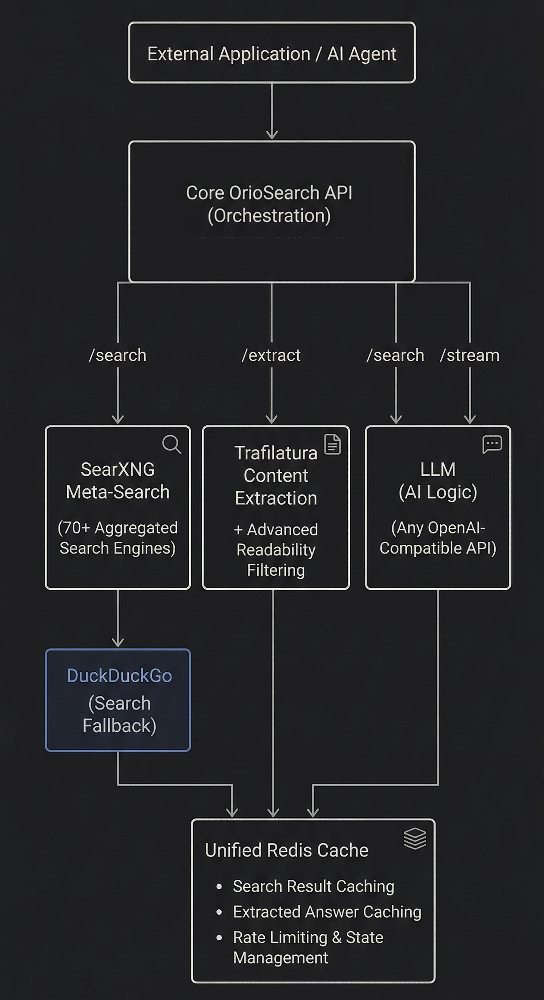

OrioSearch is an open-source web search and content extraction API you actually own. Tavily-compatible. Deploy with Docker in 30 seconds. Zero API bills, ever.
Tavily charges per search. Scale your agents and watch costs explode. OrioSearch costs nothing per query.
Every search query you send goes through someone else's infrastructure. Self-host and keep your data where it belongs.
Hit a rate limit mid-task and your AI agent grinds to a halt. Your server, your rules, no limits.
OrioSearch is a drop-in Tavily replacement. Same API shape, same response format. Just swap the URL.
# Tavily — $100+/month
base_url = "https://api.tavily.com"
api_key = "tvly-xxxxxxxxxxxxxxxx"# OrioSearch — Free forever
base_url = "http://localhost:8000"
api_key = "" # optionalThat's it. Your existing code, your existing agents — they all just work.
git clone https://github.com/vkfolio/orio-search
cd oriosearch
docker compose up --buildThree services start automatically: API, SearXNG, and Redis.
curl -X POST http://localhost:8000/search \
-H "Content-Type: application/json" \
-d '{"query": "latest AI news", "max_results": 5}'Get structured search results with titles, URLs, snippets, and relevance scores.
curl -X POST http://localhost:8000/search \
-H "Content-Type: application/json" \
-d '{"query": "what is docker",
"include_answer": true,
"search_depth": "advanced"}'Get full page content extraction and AI-generated answers with citations.
SearXNG aggregates results from Google, Bing, DuckDuckGo, and 70+ more. Automatic DuckDuckGo fallback if SearXNG is down.
Multi-tier pipeline with trafilatura (F1: 0.958) and readability-lxml fallback. Get clean markdown or text from any URL.
Set include_answer: true and get LLM-synthesized answers with source citations. Works with
Ollama, OpenAI, Groq, or any OpenAI-compatible API.
Real-time results via Server-Sent Events. Results stream in as they arrive — no waiting for the full response.
Pipeline-batched lookups, configurable TTLs, stale-cache graceful degradation. Fast responses for repeated queries.
Circuit breakers, exponential backoff retries, per-domain rate limiting, rotating user-agents, and Gunicorn with 4 workers.
FlashRank ONNX model (~4MB, CPU-only, no PyTorch). Reranks results by semantic relevance to your query.
GET /tool-schema returns OpenAI function-calling definitions. Register OrioSearch as a tool
with any LLM in one call.

Side-by-side with the tools you're probably paying for.
| Feature | OrioSearch | Tavily | Serper | Google CSE |
|---|---|---|---|---|
| Self-hosted | ✓ | ✕ | ✕ | ✕ |
| Open source | ✓ | ✕ | ✕ | ✕ |
| Content extraction | ✓ | ✓ | ✕ | ✕ |
| AI answer generation | ✓ | ✓ | ✕ | ✕ |
| SSE streaming | ✓ | ✕ | ✕ | ✕ |
| Tavily-compatible API | ✓ | ✓ | ✕ | ✕ |
| LLM tool schema | ✓ | ✕ | ✕ | ✕ |
| Result reranking | ✓ | ✕ | ✕ | ✕ |
| Price | Free | From $100/mo | From $50/mo | $5/1K queries |
Plug in Ollama for free local inference, or use OpenAI, Groq, Together AI — any OpenAI-compatible endpoint. You provide the LLM, OrioSearch does the rest.
{
"query": "what is docker",
"answer": "Docker is an open-source platform that automates
the deployment of applications inside lightweight,
portable containers [1]. It packages code and
dependencies together so applications run reliably
across environments [3].",
"results": [
{
"title": "What is Docker? | Docker Docs",
"url": "https://docs.docker.com/get-started/",
"content": "Docker is an open platform for...",
"score": 0.95
}
],
"response_time": 2.14
}llm:
enabled: true
provider: "ollama" # or "openai", "groq"
base_url: "http://ollama:11434/v1"
model: "llama3.1"
api_key: "ollama" # real key for cloudAI answers are optional. When disabled or unavailable, search results still return normally
with answer: null. Graceful degradation, always.
Seriously. One command.